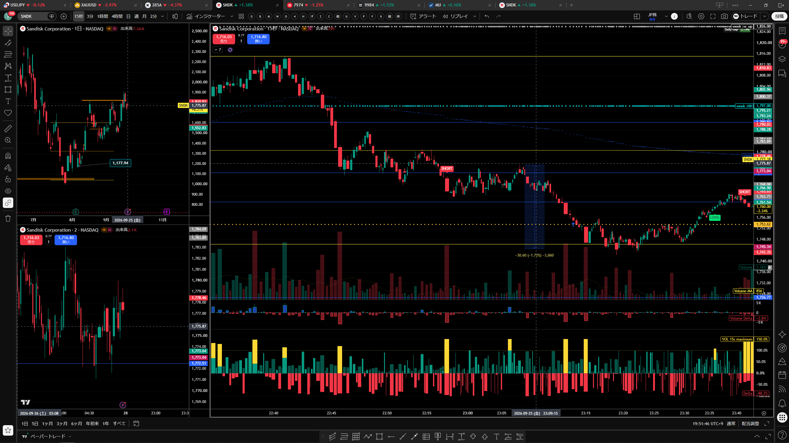
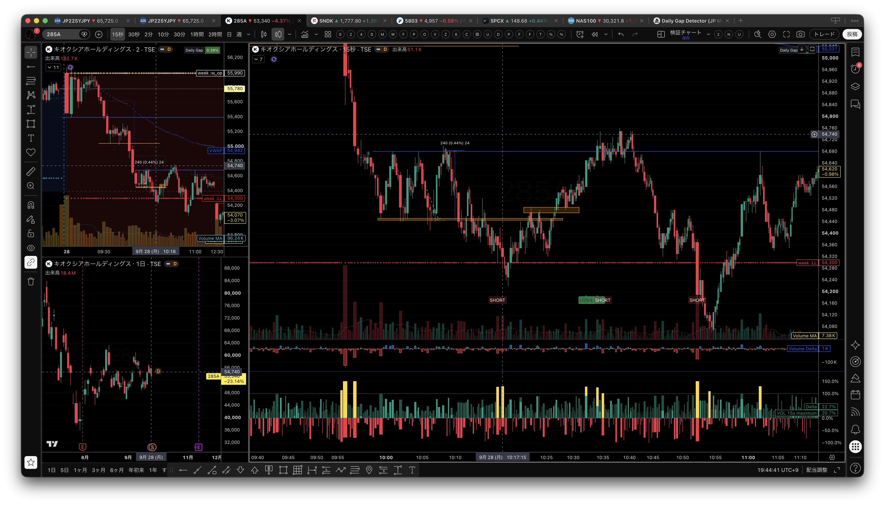
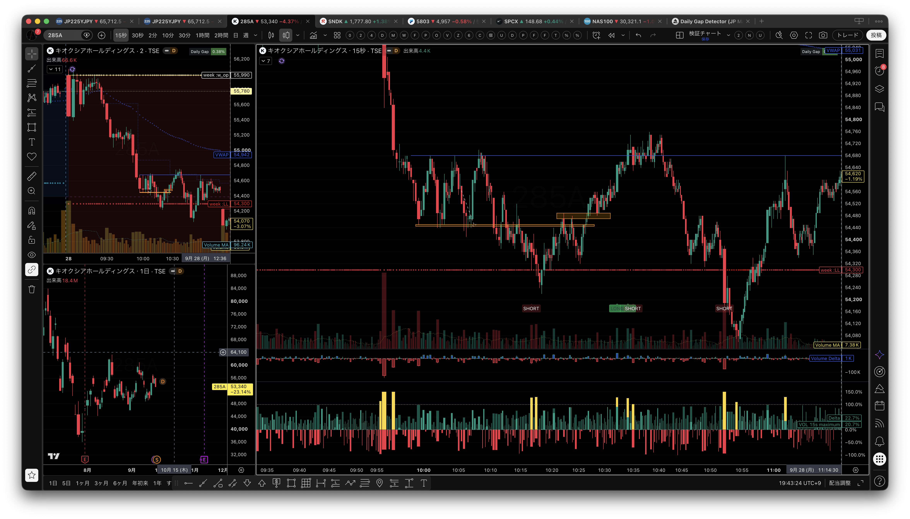
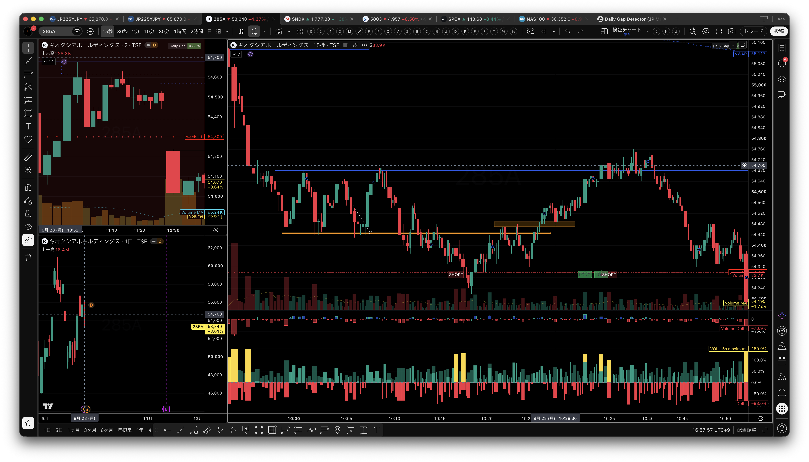
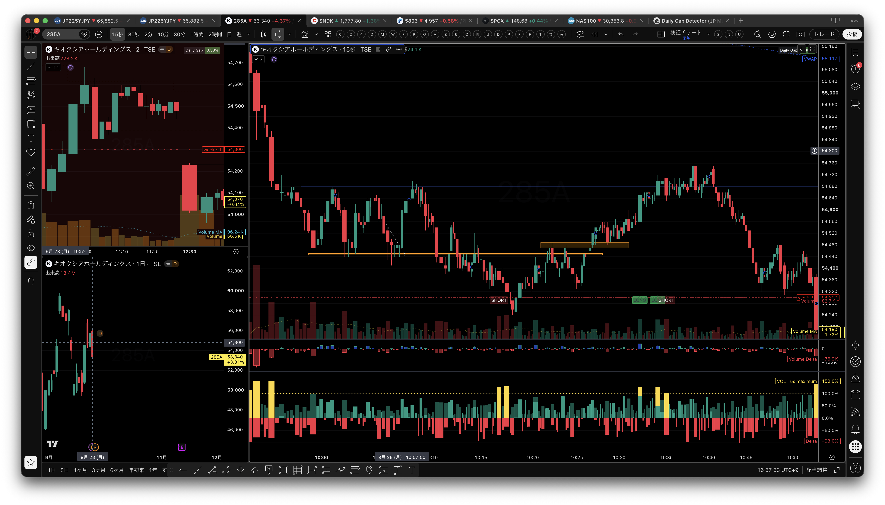
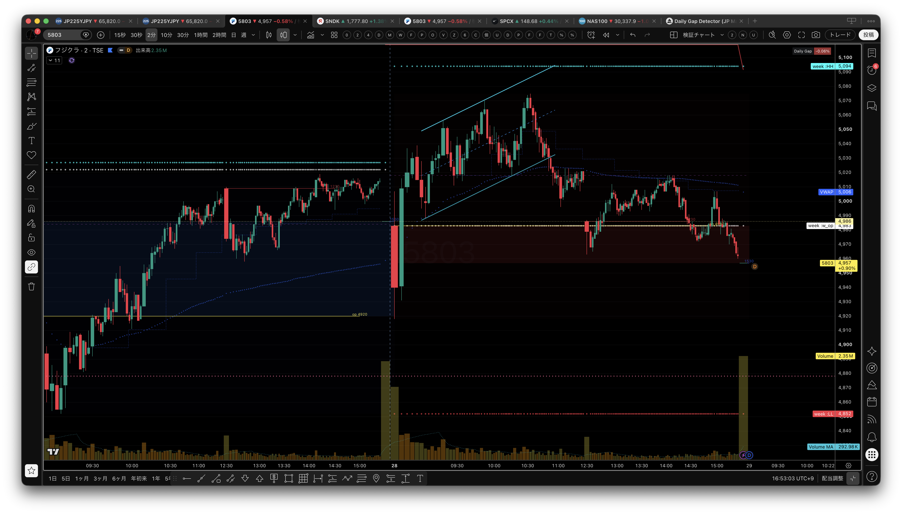
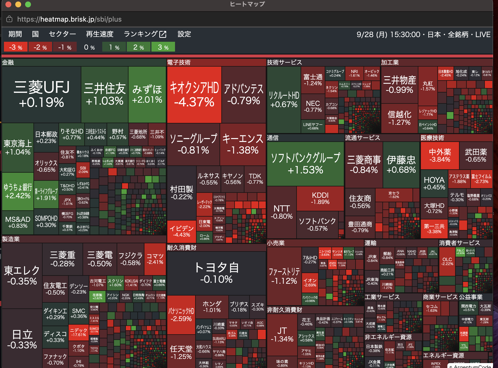
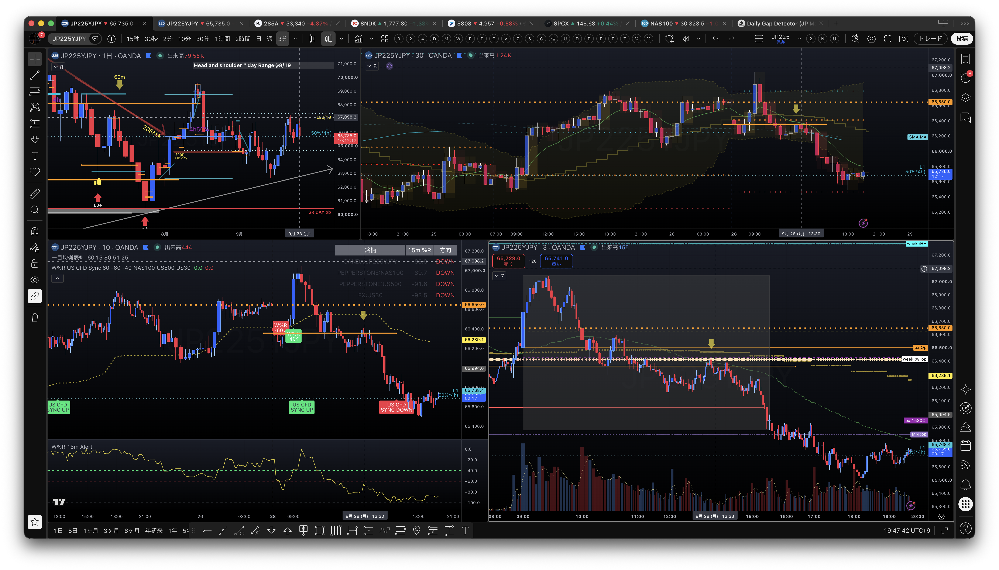
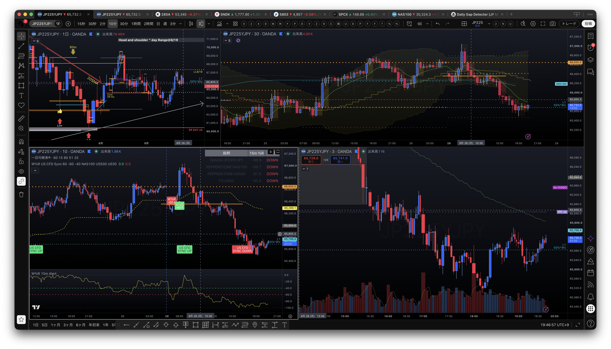
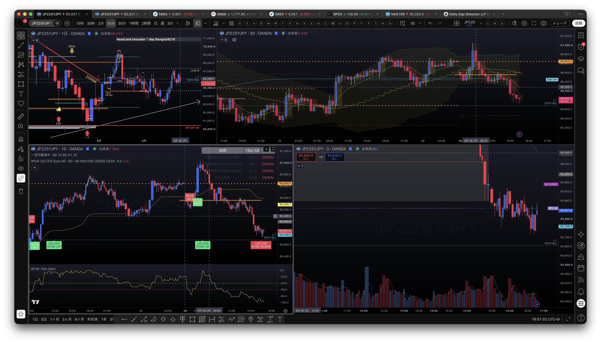

2026年9月28日（月）本番トレード日誌｜松井証券ノートレード
本番損益：取引なし・損益計上なし。
注意：0928demoの紙上取引CSVは別系統の参考資料であり、松井証券の本番実績には含めない。
0. 本日の結論
本日のレギュラー監視銘柄
| コード | 銘柄 | 日誌上の扱い |
|---|---|---|
| 285A | キオクシアホールディングス | レンジ・下方向の値動きと出来高を観察 |
| 6857 | アドバンテスト | レギュラー監視。松井証券の本番取引なし |
| 6976 | 太陽誘電 | レギュラー監視。松井証券の本番取引なし |
| 9984 | ソフトバンクグループ | ストップ高ではなく通常の値動きとして扱う |
| 5803 | フジクラ | 2分足の上昇ライン割れと下方向への傾きを観察 |
「SOFTBANK」と「5803」は別銘柄として整理。5803はフジクラ。
序盤は、下げ止まりを確認してから試しのエントリーを狙っていたが、明確なエントリーポイントがなく、無理に入らず見送った。その後、JP225は55,430円付近の安値更新、55,080円付近のレンジ、9時54分頃の下方向への再進行という流れを観察した。
11時5分頃には15秒足の出来高ダイバージェンスから反発の可能性を見たが、エントリーはしなかった。後半にはサポレジ転換からロングを検討できる場面もあったものの、松井証券口座では注文・約定を行っていない。本日は、下方向の環境で反発をどう待つかを確認したノートレード日として記録する。
1. 相場環境
日経平均のパーセントR
寄り後から10時半頃までは上方向へ向いていた。その後レンジを挟み、午後に最終的に下方向へ転じた。日中全体を最初から下方向と決めつけず、上向き・レンジ・下向きへの変化を時系列で確認する。
CFD
CFDのパターンも下方向として確認した。日経平均の％RとCFDが同じ下方向を示す場合は、戻り売り・見送り寄りを基本シナリオとする。
ヒートマップ
金融の一部が緑である一方、電子技術や加工業には赤が多い混在状態。全体を一方向の強い上昇とは扱わない。
フジクラ5803
画像では5,070円付近から5,000円前後を経て4,957円付近へ下げる流れ。VWAPは5,006円付近で、後半はVWAP下で推移している。
2. JP225の値動きと検証
| 時刻・水準 | 観察内容 | 扱い |
|---|---|---|
| 序盤〜10:30頃 | 日経平均の％Rは上方向。明確な試しのエントリーポイントはなく、下げ止まりを待った。 | 上向きでも即ロングにしない |
| 55,430円付近 | 寄り後の安値を更新してブレイク。 | 下方向継続の確認候補 |
| 55,080円付近 | いったんレンジを形成したあと、9時54分頃に再び下方向へ進行。 | レンジ内で追いかけない |
| 11:05頃 | 15秒足で出来高のダイバージェンス。 | 反発候補だが未エントリー |
| 11:18頃 | 安値55,450円を割って下へ付けたとの観察。 | 下方向の再確認 |
| 10:28頃／12:25頃 | サポレジ転換からロングを検討したとの記録。 | 時刻が混在。チャート上の候補 |
| 10:32頃 | 大きな出来高を伴う陽線。 | 上方向の試し。追随は未確認 |
| 10:53頃 | 55,000円割れで一気に下へ抜けたとの観察。 | ロング仮説が崩れる候補 |
| 10:30頃以降〜午後 | レンジを挟んだあと、％Rと価格が最終的に下方向へ進み、55,340円付近まで下がったとの観察。 | 上向きからレンジ、午後の下方向への変化 |
| 13:27頃 | 日経平均に「ペトラセルのようなパターン」が出たとの観察。 | 用語・形状は後で同定 |
反発ロングの無効化条件
54,570円割れをロスカット候補としたが、これはチャート検証上の仮説である。2枚で約1,000円、または約8,000円の値幅という試算も、建値・数量・単位の前提が未確定のため、実現損益には含めない。
反省
- ダイバージェンスだけで反転確定とせず、安値切り上げとサポレジ転換の定着を待つ。
- 下降トレンド中の反発と、トレンド転換後の押し目を明確に分ける。
- 「取れたはずの240ティック」と実際の約定を混同しない。
3. 実績区分
0928demo（紙上取引・別管理）
指定フォルダの注文履歴には、9月28日分として10件（約定9件、拒否1件）があり、285A・6857・6976・7974が含まれている。エクスポート時点の紙上ポジションは285Aロング300、SPCXロング6、JP225ショート1。これらは松井証券口座の本番実績ではない。
参照元：/Users/th/Library/CloudStorage/OneDrive-個人用/TradeDaily/0928demo
SANDISKの記録外エントリーポイント
2026年9月25日（金）夜23:09〜23:14のSANDISK SELL ENTRY POINTは、松井証券の記録には入っていない。9月28日の本番損益にも加えず、別記録として保存する。
4. 画像資料（10枚）
画像は観察根拠として保存したもの。画像から読んだ価格・時刻や表示ラベルは、松井証券の約定実績ではない。










保存先
画像
assets/2026-09-28/screenshots/
チャート画像10枚を同フォルダに保存。
紙上取引CSV
/Users/th/Library/CloudStorage/OneDrive-個人用/TradeDaily/0928demo
松井証券とは別管理。